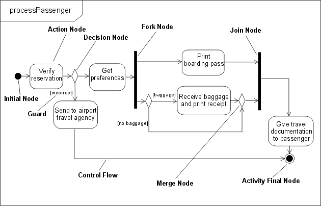
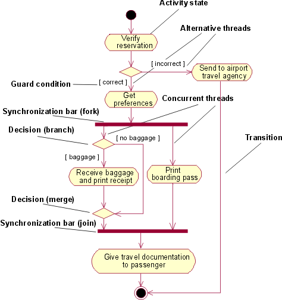
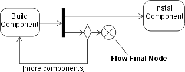
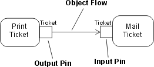
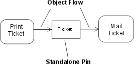
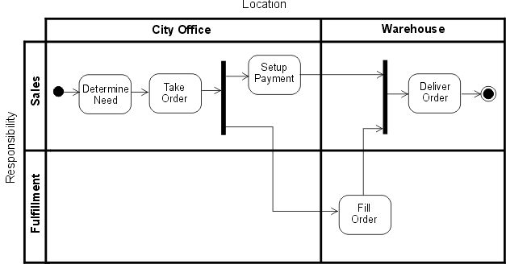
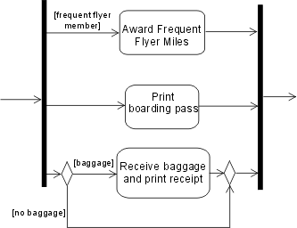
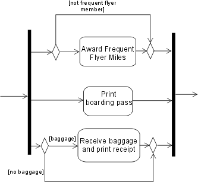
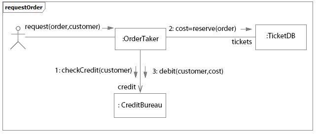
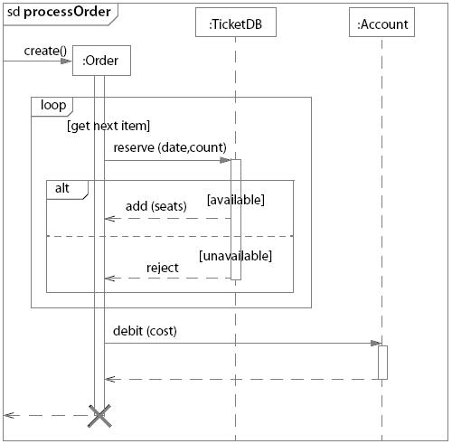

| Differences Between UML 1.x and UML 2.0 |
 |
|
Topics
OverviewThis page describes some differences from UML 1.x and UML 2.0 that are relevant to RUP context. It is not intended to cover all UML ([UML04]) Infrastructure and Superstructure Specifications, but to give an overview of relevant UML capabilities instead. Also, refer to [RUM05] and [ERI04] for more information. Note that "UML 1.x" refers to UML 1.0 to UML 1.5 versions. The most significant diagrammatical changes in the UML 2.0 feature set are in the behavioral diagrams, specifically the activity diagram and the set of interaction diagrams (see Activity Diagram, Sequence Diagram and Communication Diagram below). Composite Structure Diagram and Structured Class are also new UML 2.0 features (see Composite Structure Diagram below). Activity DiagramIntroductionThe modeling of activities has undergone a complete revision in UML 2.0. It is fair to say that, at least for casual use, the effect and appearance might be very similar, although depending on the formality of modeling in UML 1.5 (and earlier versions), it is possible that the strict interpretation and the execution result of a model constructed according to UML 1.x rules would not be the same in UML 2.0. Therefore we caution the modeler that even when a UML 1.x activity model appears to be acceptable to UML 2.0 without change, it might not execute in the same way - particularly in the case of more complex models involving concurrency. Refer to [UML04] for more information. As [UML04] defines it, an activity (which will be shown in an activity diagram) is the specification of behavior as the coordinated sequencing of subordinate units whose individual elements are actions. We may have informally referred to the individual executable steps in a UML 1.x activity diagram as activities or activity states or, correctly, as action states: now these steps in a UML 2.0 activity are called actions - and these actions are not decomposed further within the activity. The connotation of state has disappeared in UML 2.0 because an activity is no longer a kind of state machine, as it was in UML 1.x. In UML 2.0, activities are composed of nodes, of which actions are one kind; others, described further below, are control nodes and object nodes. Flow Semantics Activities now have Petri Net-like semantics, based on token flow, where the execution of one node affects the execution of another through directed connections called flows. Tokens, containing objects or a locus of control, flow between nodes across these connections. A node is allowed to begin execution when specified conditions on its input tokens are met, and when it completes execution, it offers tokens on its output flows, so that downstream nodes may begin execution. The flows connecting nodes are further refined into control and data or object flows and, as you might expect, control tokens move across control flows and object or data tokens pass across object flows. This contrasts with UML 1.x, where the nodes were states (or pseudo states) with transitions between them, which limited the modeling of flows. Concurrency Modeling The modeling capability of UML 2.0 allows unrestricted parallelism: whereas in UML 1.x, the entire state machine (activity) performed a run-to-completion step, the UML 2.0 capability, in its most complete form, permits multiple invocations of an activity to be handled by a single execution with multiple streams of tokens moving through the nodes and flow connectors of the activity. This puts the onus on the modeler to be aware of race conditions and interactions. Also, see the section Semantic Differences below for another example of the effect on concurrency modeling of token flow semantics. NotationAction and Control Nodes The diagram below illustrates many of the UML 2.0 elements, and is presented in the usual way for UML 2.0, with a rectangular frame and a name in a compartment at the upper left. Compare this diagram with the UML 1.x version shown below it. They are similar in appearance (allowing for the differing orientation and color conventions used-these have no semantic significance), and this model has the same execution result in UML 1.x and UML 2.0. Note that the control nodes - decision, merge, fork, join, initial and final - look like their UML 1.x equivalents, and the control flows are shown with an arrowed line, a visual analog to the UML 1.x transition arrow.
 Example UML 2.0 activity diagram
 Example UML 1.x activity diagram UML 2.0 has an additional control node type called Flow Final (shown below in a diagram taken from [UML04]) that is used as an alternative to the Activity Final node to terminate a flow. It is needed because in UML 2.0, when control reaches any instance of Activity Final node, the entire activity (including all flows) is terminated. Flow Final simply terminates the flow to which it is attached. This was not an issue in UML 1.5 because of the run-to-completion semantics, but with the unrestricted parallelism of UML 2.0, you might not want all flows stopped and all tokens destroyed.
 Flow final control node Object Nodes UML 2.0 activity modeling also supports object nodes. An object node is an activity node that indicates that an instance of a particular classifier, possibly in a particular state, might be available at a particular point in the activity (for example, as output from, or input to an action). Object nodes act as containers to and from which objects of a particular type (and possibly in a particular state) might flow. New notation, called a pin, has been introduced for object nodes in UML 2.0. Pins represent inputs to an action or outputs from an action and are drawn as small rectangles that are attached to the action rectangles, as shown below.
 Pin notation The arrows represent object flows. These are solid lines, unlike the dashed lines used for transitions to and from object flow states in UML 1.x. When the output pin on an action has the same name as the input pin on the connected action, the output and input pins may be merged to give a standalone pin. This again gives a visual analog to object flow in UML 1.x.
 Standalone pin notation Structured Activity Nodes A structured activity node is an executable activity node that may have an expansion into subordinate activity nodes. The subordinate nodes belong to only one structured activity node, but they may be nested. It may have control flows connected to it and pins attached to it. A structured activity node is drawn as a dashed round cornered rectangle enclosing its nodes and flows, with the keyword <<structured>> at the top. Activity Partitions An activity partition is a way of grouping the nodes and flows of an activity according to some shared characteristic. In UML 1.x, the idea of swimlanes (which were regarded as partitions) was used in activity diagrams to group actions according to some criterion - for example, in business modeling, by performing organization. UML 2.0 extends this partitioning capability to multiple dimensions for activity diagrams and provides additional notation so that, for example, individual actions can be labeled with the name of the partition to which they belong. The diagram below shows an example of multidimensional swimlanes as they would appear according to UML 2.0, where actions are grouped according to location and responsibility.
 Activity partitions example using two-dimensional swimlane Semantic Differences The token flow semantics and the unrestricted parallelism of UML 2.0 activity models require the modeler accustomed to UML 1.x to exercise caution when constructing new models or converting existing models, to ensure the execution result is that intended. For example, in the processPassenger example above, the passenger checking in might be a frequent flyer member, in which case, the agent needs to award the passenger frequent flyer miles, as shown below in a UML 1.x model fragment.
 Using guarded concurrent transition Placing the guard on the optional concurrent transition means that, in UML 1.x, the transition never starts, and the behavior is as if the transition were not shown in the model; accordingly, when the other two transitions complete, execution continues after the join. In UML 2.0, if the passenger is not a frequent flyer, no token will ever reach the join along that flow and the model will stall because the join waits for tokens on all its flows before continuing. The model should be constructed as shown below, with the condition treated in the same way as the baggage handling flow. It is permissible to place guards directly on concurrent flows as long as you are sure no downstream join depends on them.
 Using decision and merge nodes instead of the guarded concurrent flow Communication DiagramThe UML 1.x collaboration diagram has been renamed to communication diagram in UML 2.0. There are no semantic differences from previous versions. The communication diagram is based on the former collaboration diagram and still is one type of interaction diagram. NotationA communication diagram focuses on the interaction between lifelines. It is shown as a graph whose nodes are rectangles representing parts of a structured class or roles of a collaboration. A rectangular frame around the diagram with a name in a compartment in the upper left corner is used, which is a notational change from previous UML versions.
Example of a communication diagram:
 Example of Communication Diagram for an Ordering system ComponentIn UML 2.0, a component is notated by a class symbol without the two protruding rectangles, as defined in UML 1.4. A <<component>> stereotype is used instead. Optionally, a component icon that is similar to the UML 1.4 icon can still be used in the upper-right corner of the component symbol. UML 2.0 defines a component as being a structured class, which means that the collaboration between elements in its internal structure (parts) can be modeled to better describe its behavior. Parts are connected through connectors. Ports can be used to increase encapsulation level of a component through its provided and required interfaces. Refer to Concept: Component and Concept: Structured Class for more information. Earlier versions of UML defined a special modeling element called subsystem, which was modeled as a package with interface. Also, components were used to structure the model in the physical architecture. In UML 2.0, components are used in a broad sense, across all parts of the model. Thus, there is no need for a special element to model subsystems anymore. Separate compartments for subsystem realization and subsystem specification in UML 1.x have become separate stereotypes (<<realization>> and <<specification>>, respectively) applied to components in UML 2.0. Another new component stereotype is <<subsystem>>, indicated to model large-scale components. RUP suggests using components to model subsystems (refer to Guideline: Design Subsystem for more information). Composite Structure DiagramArchitectures can have specific collaboration between its elements, with parts and connectors not necessarily known at design time. A typical class diagram (as well as other static diagrams) wouldn't be sufficient to clearly represent the roles, responsibilities, relationships and rules that apply on those elements. To address these issues, UML 2.0 has added the composite structure diagram. It can depict the internal structure of a structured class (for example, component or class), including the interaction points of the structured class to other parts of the system. It shows the configuration of parts that jointly perform the behavior of the containing structured class. Composite Structure Diagrams are used to draw internal content of Structured Classes (refer to Concept: Structured Class for details and examples of Composite Structure Diagrams). Sequence DiagramUML 2.0 has several new features for sequence diagrams:
With the new capabilities to represent fragments, interaction occurrences and loops, sequence diagrams can be used in two forms:
The figure below shows an example of a sequence diagram modeling different scenarios. The alt fragment shows two possible alternatives of message sequencing depending on if a condition is satisfied or not:
 Example: Sequence diagram showing branches, loops and conditions |
© Copyright IBM Corp. 1987, 2006. All Rights Reserved. |